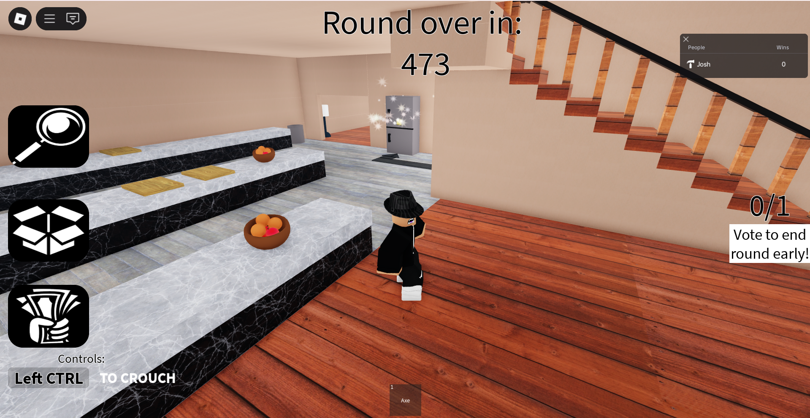
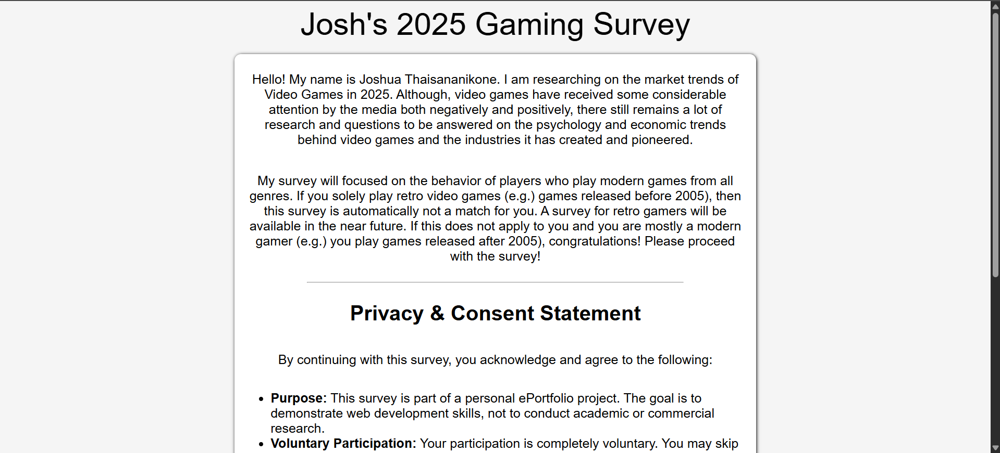
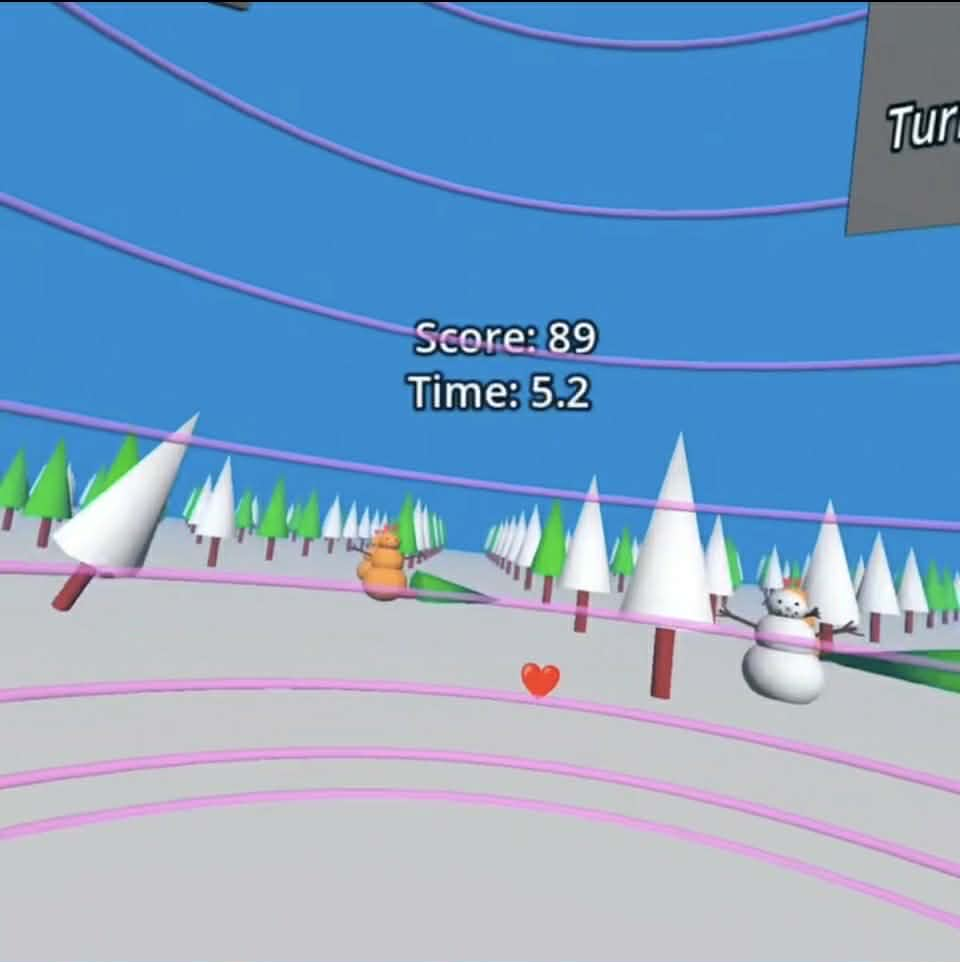

Software Engineer | Game Developer | Web Developer
My Projects:
I have worked on countless projects, which has taught me a lot about software
engineering and development in general. Below are some of the projects
I have worked on:
Course Enrollment Manager
Try on GitHub
In my Intro to Software Engineering, I worked in a team of 4 to create a web application using Django, HTML, and CSS that
enabled for professors, students,
and administrators to manage course enrollments and other various tasks such enrollment requests and available course
based on their respective view. We followed the SCRUM methodology to ensure collaboration and timely completion of work.
I was tasked with completing Administrator view, assisted in developing the Student and Professor view and led the unit
testing and acceptance testing for the project. We worked on this project for 4 weeks and presented during the final exam
week of the Spring 2025 semester. I help lead the live technical demonstration of our project during presentations.
Escape!
 Try on Roblox
Since January 2025, I have been working on a project called "Escape!". "Escape!" is a game (inspired by Room Escape) where
every round, players have to escape from a map by 10 minutes. The maps are a combination of obstacle courses
(often known as "obbies" by Roblox players) and puzzles. Currently, this project has three maps, I am looking forward
to adding more content. I am currently working on this project by myself. I am scripting in Lua, creating 3D models for in-game
usage, and planning the whole game by myself. This project has allowed for me to practice my attention-to-detail skills, organization skills,
and problem solving skills. I am very excited as to where this project will lead me.
Express Survey Application
 Try on GitHub
This is a personal project that I have been working on for the past few months.
The goal of this project is to create a web application that allows users to fill out a survey and view the results.
The application is built using Express.js, Node.js, and SQLite.
I am currently working on adding more features to the application, such as survey analytics. I am hoping to deploy
this application soon. This project has been a great way for me to practice my skills in web development and
backend programming.
Winter Boogie
 Try on GitHub
Winter Boogie is a collaborative project I worked on with a team of four developers for my
Immersive Technologies and 3D User Interfaces course at the University of Wisconsin-Milwaukee.
This is a Virtual Reality game that was created using Godot 4.4.1, Roblox for some 3D modeling, and the Meta Quest 2.
It is an arcade
shooter game that contained three rounds. Each round was divided into two parts: a wall dodging section and a
combat round. The wall dodging section is simply the user dodging walls using the Human Joystick locomotion
technique. The walls approaches the user quicker after every round. The combat part requires the user to be
swift and shoot at snowmen that are approaching you from every angle. The snowmen become harder to kill after
each round. Between the wall-dodging and combat part, players can use their score to purchase weapons to use in
the combat part. This project was presented during final exam week and won 2nd place in a competition
for consideration for an internship at Discovery World, a science and technology museum in Milwaukee, Wisconsin.